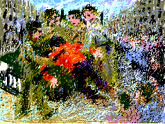

Khader told me: "One day in Nablus when I was working helping my brother load the back of a truck a group of Israelis surrounded me. Suddenly four of them grabbed me. I was only fourteen. They did not explain their actions nor show any Identification. It was frightening. I was jostled rudely and thrown into their jeep. As they took me away my mind raced over all the horror stories about Israeli settlers. They took me to a building questioned me rudely and on the following day they released me. It turned out they were Israeli soldiers in plain clothes. If I had known they were soldiers I would have been a little less scared. Settlers are brutal. Those they kidnap are never seen again. I remember that day I was wearing a red shirt".
Bilal told me: "My grandmother remembers the days before the establishment of Israel on our land of Palestine. She told me about the forced exodus of the Palestinians from northern villages and how she came as a teenager to Nablus. She remembers the terrorism of the Jewish gangs. Of all the horrors the one which she repeated most was that of how on the long agonized march some women were so thirsty that they collected and drank their own urine. To her it was a measure of the criminality of those first Jewish settlers".
My Grandmother... The Town of Beisan... The Arab City of Jerusalem... Sabah Told Me... My Home in Yafa... Khader Told Me... Olives of Palestine... Our Students... A Taxi Ride in Bethlehem... Written by Doctor Fathihe Saudi... Hasan Told Me... A Visit to Kafr Qasem... The Artist of Kafr Qasem... The Massacre at Kafr Qasem (not yet ready)
Tayseer Barakat, painter... Rana Bishara, painter and installation artist... Sari Khouri, painter... Abdel Tamam, painter... Vera Tamari, ceramist and painter... Adnan Yahya, painter and graphic artists...